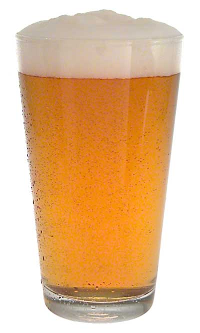

Many of our beer names are inspired by our pets, but as we brew different new beers we will begin naming them for some of our other favorite zoo animals, perhaps even yours.
Paddywompus
Imperial Stout – ABV 11.4%
A play on Pat’s name, our Paddywompus Imperial Stout explores the darkest reaches of the traditional oatmeal stout. This bold, rich brew first lures you in with roasted coffee notes, then grabs hold with hints of bittersweet chocolate and currant. Backed with a perfect hop balance, you’ll soon discover this is one will have you a little caddywhompus.
Hoppin’ Leighzard
Imperial IPA – ABV 8.3 %
This one’s for Leigh, she loves anything IPA, so we decided to try something bold. This hard-hitting brew manages to pack a punch while still providing that fantastically complex IPA flavor. Slightly floral aromas hit the nose while resinous flavors dominate the body, finishing with the ideal palate cleansing bitterness.
Koda Bear
Hefeweizen – ABV 5.4%
From the German words for “yeast” and “wheat” comes the name of the famous Bavarian wheat beer style, Hefeweizen. Our tribute to the great hazy, refreshing beers of Southern Germany is planted firmly in tradition, with all the clove-like spiciness and fruity esters expected in the style.
Furry Princess
Peach Wheat – ABV 5.2%
Inspired by our Furry Princess Leia, it is an American Wheat beer brewed with malted wheat and blended with peach and mango concentrates. This beer starts sweet but finishes with a refreshingly tart smack.
Junk in the Trunk
Peanut Butter Porter – ABV 8.5%
Inspired by Layla who has what looks like has an elephant on her rear fur. Junk in your Trunk delivers chocolatey, peanut buttery, porter goodness. It's like drinking peanut butter cups blended with porter beer. That's because the brewers add healthy doses of chocolate and peanut butter.
Farmhand Bobo
Saison – ABV 6.7%
Flaunting a deep golden glow and meringue-like froth, saison is the quintessential Belgian farmhouse ale. Dry and effervescent, and complex yet delicate in flavor. Notes of honeysuckle, sourdough, peppercorn, tart green apple, lemon zest, earthy/floral hops, and banana gradually reveal themselves in this refreshing, pastoral beer.

Cloud Nine
Vanilla Cream Ale – ABV 4.7%
This one’s for Cloud, the zoo fat cat. We brewed this cream ale with tons of vanilla beans to add another level of flavor to this crisp, refreshing beer.
Tiny Terror
American Brown Ale – ABV 5.0%
Inspired by our “Tiny Terror” Penny, this brown ale has a malty and smooth, with a deep tobacco hue and an approachable body. Toasted oats and Honey Malt lend an oatmeal cookie aroma.
Low Key
Bourbon Barrel Stout – ABV 8.9%
Our Low Key is about as subtle as our Loki is. This stout is silky and smooth with noticeable roasted notes and coffee-like characters typical of the style. During its time in the barrels, this beer acquired sublime hints of bourbon, vanilla, and oak.
Bee’s Knees
Mead – ABV 5.2%
Our mead is fermented with locally sourced honey and we also infuse it with family grown blueberries for that little extra oomph, and well, it’s just the bee’s knees.
Sweetie Pie
Cider – ABV 4.8%
We got tired of making pie in the oven, so we decided why not drink it. Every batch is different as we rotate what fruit we infuse it with.